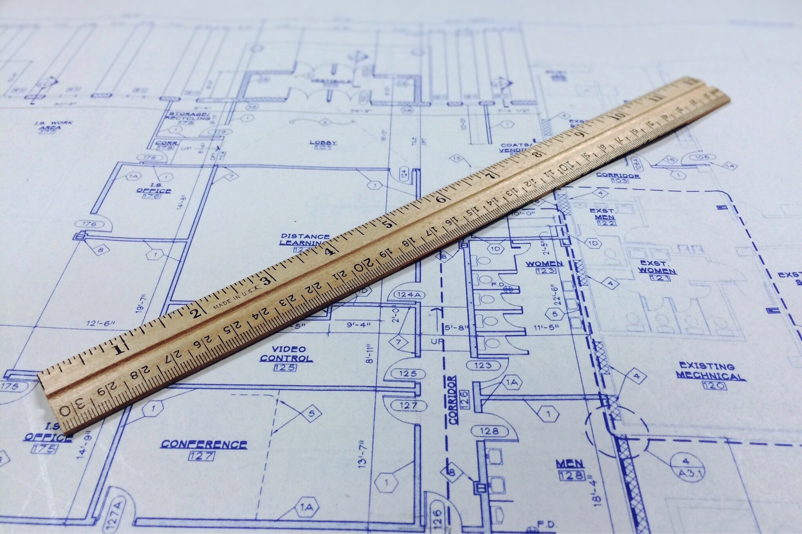

Any good engineer or architect follows a set plan, or blueprint, about how they can implement a solution to a given problem. In software engineering, this blueprint can also be called a design pattern. More specifically, design patterns solve commonly found problems and utilize a tried-and-true solution that can be customized easily to different situations. These are not explicit chunks of code that can be copied and pasted into a program; rather, it defines a general template to follow in order to resolve an issue. By consistently following them, these patterns can also prevent certain issues from occurring in the future, establish a standard to follow, and allow for better code readability.
Putting design patterns into practice will help you become a more effective and efficient programmer. There are many different ways that they can be implemented, and I have had some firsthand experience with them for some of my classes throughout my college career. For ICS 314, we were oftentimes given templates for various purposes, such as meteor-application-template-react, which was a program blueprint that demonstrated how we should structure our applications built in Meteor. We also worked with Bowfolios, a template application which implemented a contact card system in Meteor. Working with these templates gave me a good understanding of how to structure my programs, while still allowing me to customize them to my own liking. This was a much better alternative to being overwhelmed by attempting to build the entire application from scratch. Another design pattern that I have put into practice is called the factory method. We primarily utilized this in EE 205, Object Oriented Programming, in which we created an “animal factory” to create constructors for various animal classes. Overall, I think that design patterns are extremely beneficial for all programmers, especially those who are just beginning their software engineering journey.